Turn 10,994 Notes Into Memory
A three-version personal research OS: deep-research loop over curated links, second-brain deep research, then a persistent wiki layer over immutable raw notes with a metadata index.
If you only read one thing
- V1 ran a classic deep-research loop (orchestrator agent + sub-agents querying Google via Gemini) against manually curated golden links, outputting one static research.md file used to generate 35 course lessons.
- V2 aimed the same deep-research loop at the authors' own second brains (Obsidian, Readwise, NotebookLM, GitHub) instead of the public web, removing the need to hand-pick golden links.
- V3 added a wiki layer on top so research stops being static: raw files stay immutable, an index.yaml catalogs sources with summaries/metadata, and the LLM writes derivative wiki pages (concepts, entities, comparisons) that keep evolving as new questions get asked.
This traces the talk's own V1-to-V3 progression into one picture: two ingestion routes feeding an immutable raw store, a metadata index, and a wiki layer that the query agent checks cheapest-first (ours).
Why this talk is a blueprint, not a take (ours)
Scope: A personal, file-based research memory system (no vector database) built as Claude Code and Codex skills: a deep-research loop over curated or self-owned sources, an immutable raw store, a references-only index, and a wiki layer that compounds from both ingestion and usage.
A working pattern for turning an existing note corpus into a queryable, compounding personal wiki without standing up retrieval infrastructure, plus the documented reasoning for each of the three build stages (public-web deep research, then second-brain deep research, then a persistent wiki) and why each prior version fell short. It ships as an installable Claude Code/Codex plugin repo rather than a hosted product.
Prerequisites the talk implies:
- An existing note corpus worth querying (the speakers had 5,000+ Obsidian notes and 5,000+ Readwise highlights each)
- Comfort running Claude Code or Codex skills/plugins and setting up CLIs or auth for each connected source (Obsidian, Readwise, NotebookLM, GitHub)
- Tolerance for a 10-20 minute agent run per deep-research pass, since the process is described as token- and time-heavy
What the talk does not say:
- No cost or token-usage figures for a deep-research run or for maintaining the wiki over time
- No evaluation of wiki output accuracy, only a demo walkthrough, so it's unclear how often generated concept/comparison pages are wrong or stale
- Single-user design only; no discussion of how this would work for a team sharing one wiki
- No source-quality or staleness scoring yet, an acknowledged open gap
- No detail on how index.yaml or the wiki folder structure holds up past the demo's 10 sources and 38 pages
If you were to replicate one thing first: Before building the wiki layer, replicate V1 alone: run the golden-links deep-research loop into one static research.md file for a real topic, to confirm the retrieval pattern itself is useful before investing in the raw/index/wiki structure.
| Component | What it does (from the talk) | Evidence | Slide |
|---|---|---|---|
| Second brain (Obsidian + Readwise) | Personal note corpus, 5,000+ notes each in Obsidian and Readwise, growing about 250 files a month, that the system is built to query | c1 · 00:00 | 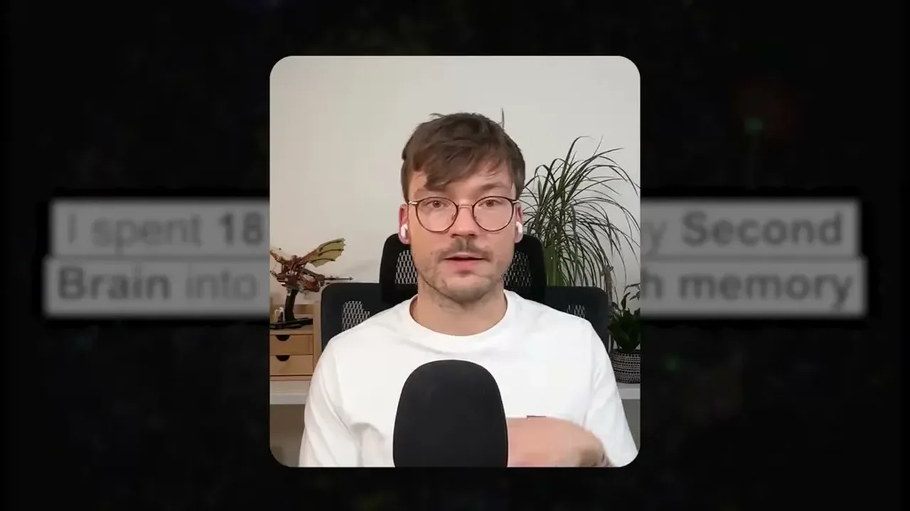 |
| Vector-DB RAG (rejected) | Considered and rejected as the retrieval backbone: powerful at production scale but infrastructure-heavy and hard to inspect or edit by hand for personal daily use | c2 · 06:15 | 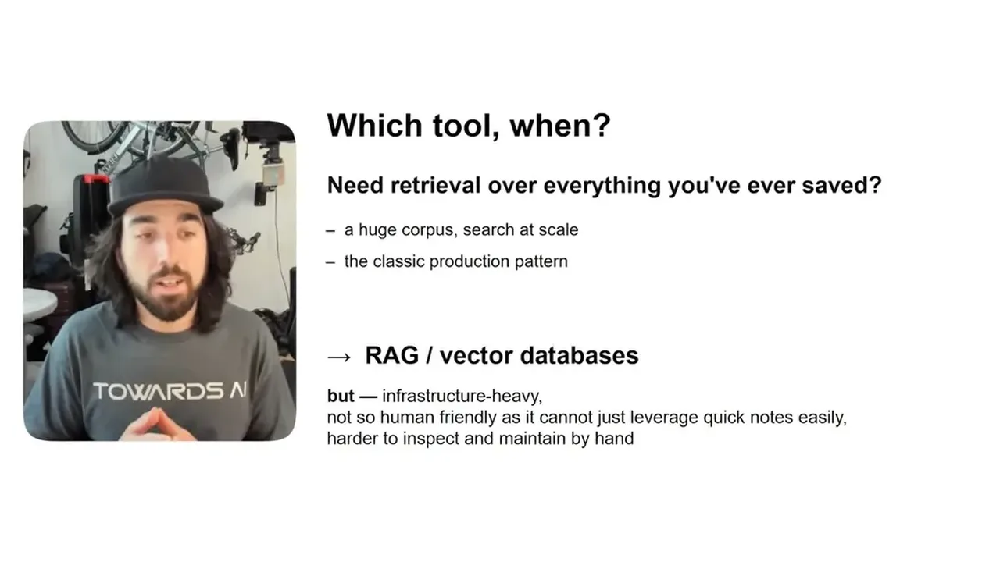 |
| V1 deep-research loop (orchestrator + sub-agents) | Topic plus hand-picked golden links, scraped for seed context, then 3 rounds of 6 sub-agent queries via Gemini grounded search, ranked and compiled into one static research.md | c3 · 14:35 | 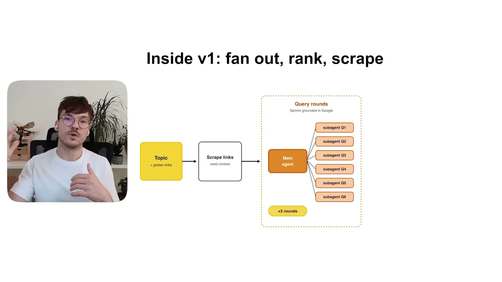 |
| V2 second-brain connectors | Same loop retargeted at the authors' own sources, Obsidian, Readwise, NotebookLM, GitHub, and Gemini Deep Research, using only the topic as seed, still producing a static research.md | c4 · 17:10 | 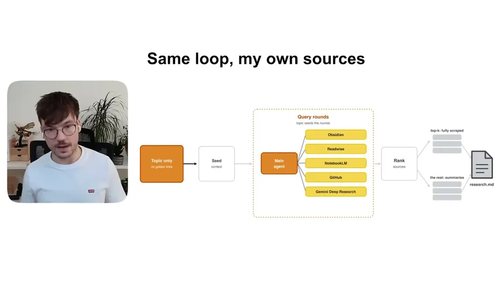 |
| index.yaml | A references-only catalog (no database) of ingested sources plus derivative wiki pages, with per-source metadata and summaries; the agent reads this first | c5 · 20:18 | 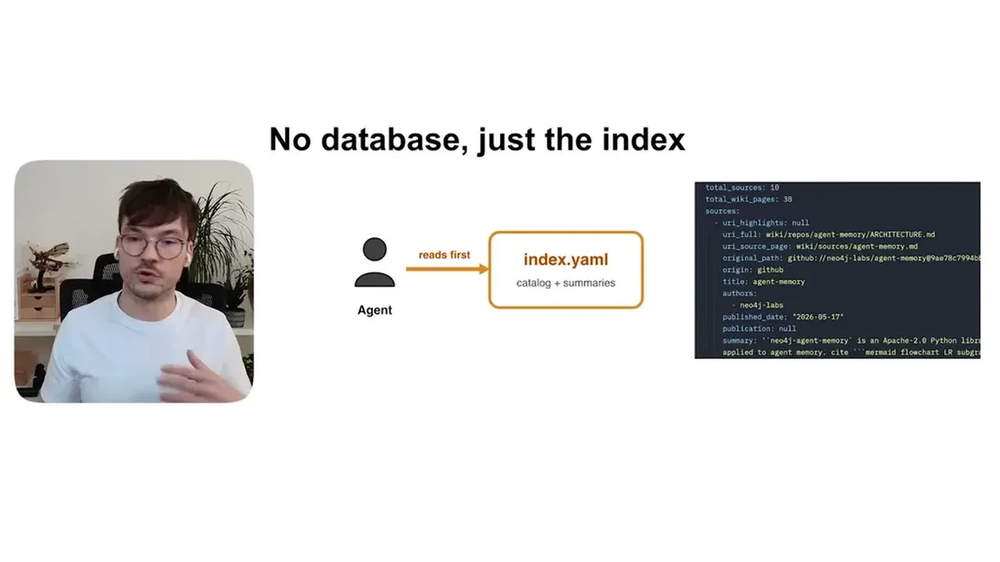 |
| Query hierarchy (index, then source wiki page, then raw) | Agent checks the index.yaml summary first, then the source wiki page, and only reads the full raw file if neither answers the question, keeping token use low | c6 · 23:29 | 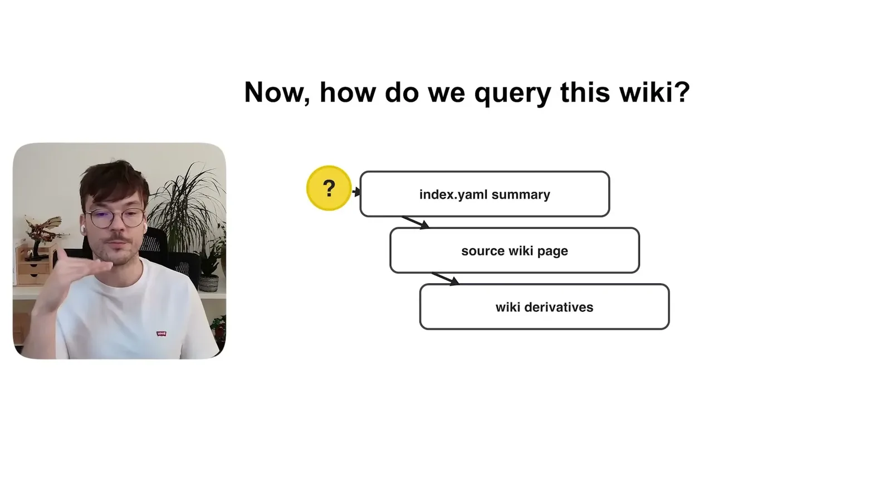 |
| Wiki-from-questions | Every question against the wiki can make the LLM write a new concept, notes, or comparison file and logs the question, so the wiki compounds from usage, not only ingestion | c7 · 24:01 | |
| Known gaps | Missing connectors (Google Drive, Notion, Slack), no source-quality or staleness scoring, and a builder-only CLI workflow with no polished UI, left unaddressed by design | c8 · 37:32 | 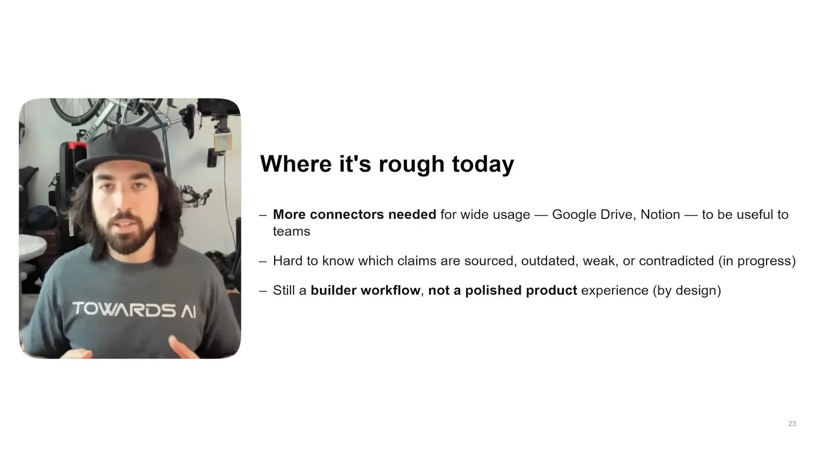 |
The problem: research doesn't stick across sessions
- Paul Iusztin has over 5,000 notes in Obsidian and another 5,000 in Readwise, growing by roughly 250 files a month, but can't reliably recall or surface high-signal notes when starting new work.
- Tools like NotebookLM or Codex/Claude alone don't solve this because you don't own the system, can't personalize it, and it isn't agent-native.
“I currently have over 5,000 notes in Obsidian and another 5,000 notes in Readwise and some scattered in Notion and Google Drive. And all of this is growing on every week 250 files per month”
said at 00:00Why not just use vector DB RAG
- Louis-François Bouchard argues that a production RAG pipeline with a vector database requires infrastructure that isn't human-friendly to inspect or edit by hand, which is fine at product scale but wrong for a personal daily-use system.
- The chosen alternative is a system based purely on plain markdown files and references, with no database.
“this needs an infrastructure. It's not really human-friendly to be able to digest quickly, to check notes, to make edits. It's hard to inspect by hand”
said at 06:15V1: deep research over hand-picked golden links
- The first version took a topic plus manually curated golden links as input, scraped them for seed context, then ran three rounds of an orchestrator agent generating six queries per round via Gemini grounded search, ranking roughly 40-50 resulting links by relevance to the topic, and compiling everything into one static research.md file used to generate 35 course lessons quickly.
“we did this for three rounds. So basically after three rounds of generating six queries per round, we ended up with like 40-50 links in total”
said at 14:35V2: same loop, aimed at the second brain instead of golden links
- V2 removed the need for manual golden links by pointing the same deep-research loop at the authors' own Obsidian, Readwise, NotebookLM, and GitHub sources plus the public web, using only the topic as seed.
- This produced a research.md that was more personalized but was still a static, one-time file that had to be regenerated from scratch to update.
“we plugged in all our second brains, such as the our Obsidian, our Readwise, our Notebook LM, our GitHub”
said at 17:10V3: adding a persistent wiki layer
- V3 keeps the raw ingested files immutable, builds an index.yaml catalog (in the demo containing 10 sources and 38 derivative wiki pages) with metadata and summaries per source, and has the LLM write derivative wiki pages -- concepts, entities, comparisons, open questions -- that a graph view in Obsidian can visualize.
- The agent queries in a token-efficient hierarchy: source-level summary first, then wiki derivatives, and only reads the full raw source as a last resort.
“you can see part of an index.yaml file that contains 10 sources and 38 wiki pages as derivatives of these sources”
said at 20:18“sometimes the agent just looks into this, gets what it needs, and goes back. Which is very token efficient”
said at 23:29The wiki evolves from usage, not just ingestion
- Every question asked against the wiki leaves a trace: the LLM can create new concept, notes, or comparison files and logs the question, so the wiki keeps evolving purely from conversation, not only from new ingestion or deep-research runs.
- Iusztin structures this with the PARA method, treating the Obsidian vault as an immutable second brain that projects reference into project- and area-scoped work.
“For example, every question leaves a trace into your wiki. So for every question, the LLM can create a new concept file, a new notes”
said at 24:01Known gaps and where the ideas get productized
- The speakers list open weaknesses: missing connectors (Google Drive, Notion, Slack), no way to know which sources are outdated or weak, and a builder-only workflow with no polished UI, all left unaddressed by design since the project's purpose is teaching memory/context management rather than shipping a product.
- They point to their paid Agent Engineering course as where a fuller version of this deep-research/writing-agent system is built out.
“it's hard to know which sources are outdated or weak or strong compared to some other system that we built”
said at 37:32Commentary (ours)
The interesting design bet is treating the raw/index/wiki split as a token-efficiency hierarchy rather than a data-modeling exercise -- the agent is instructed to stop reading as soon as a shallower layer answers the question, which is a cheap way to bound cost without an explicit retrieval-ranking system (ours).

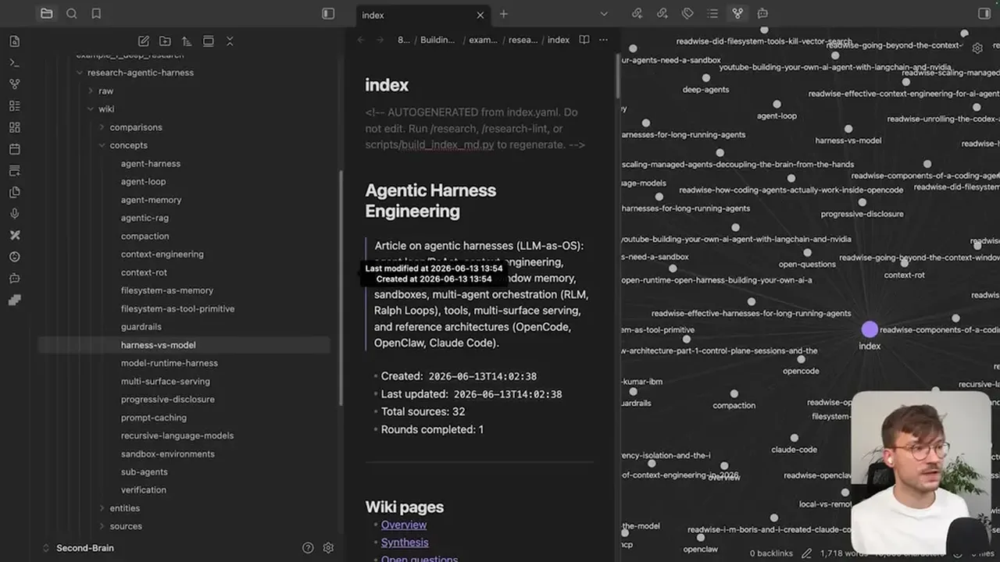
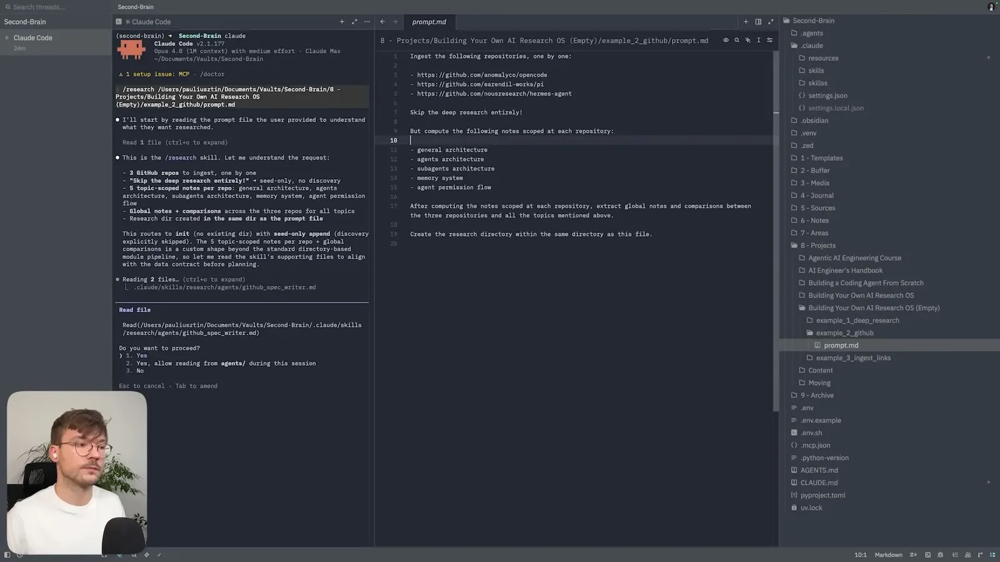
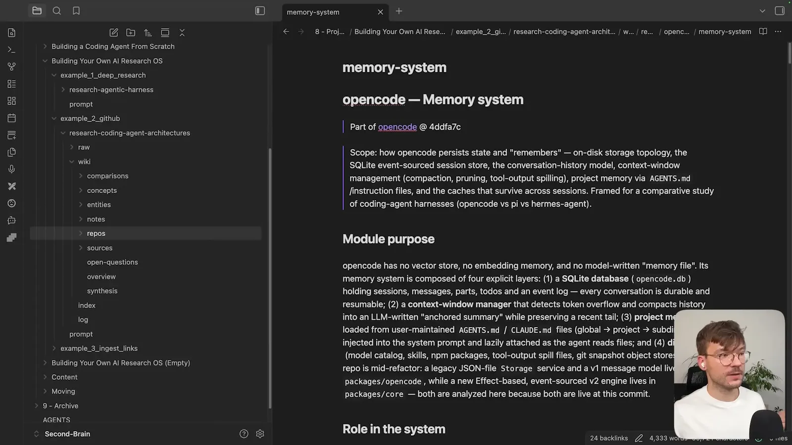
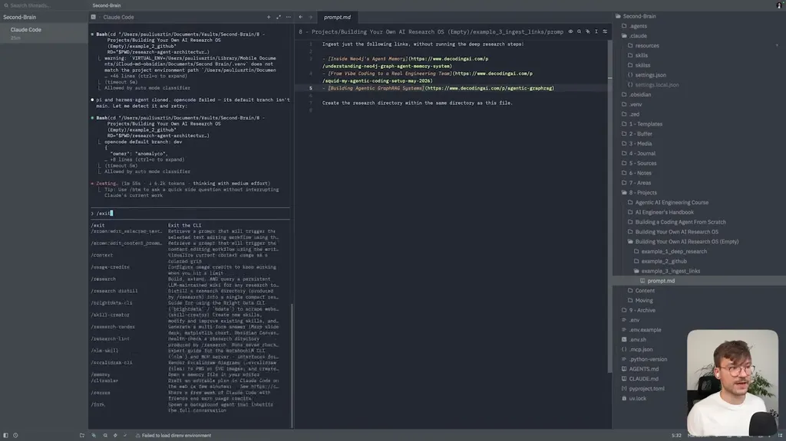
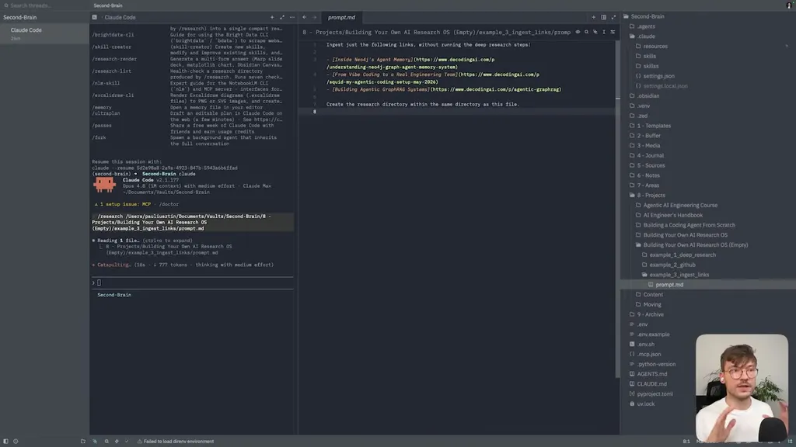
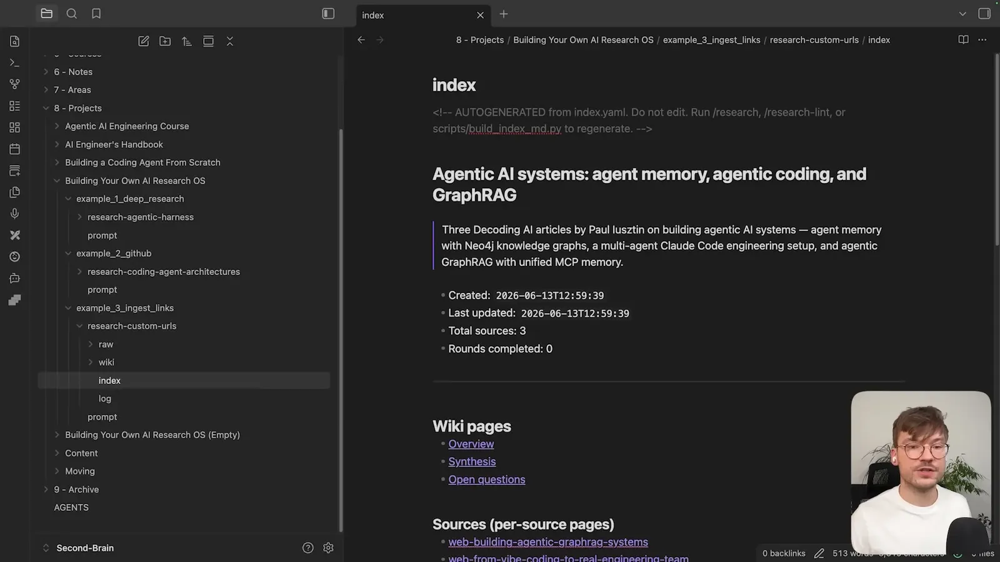
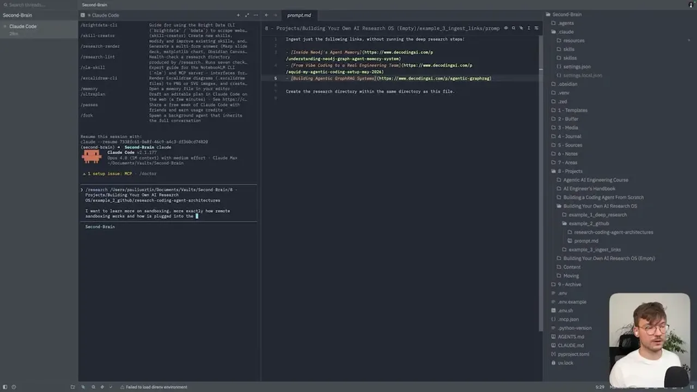
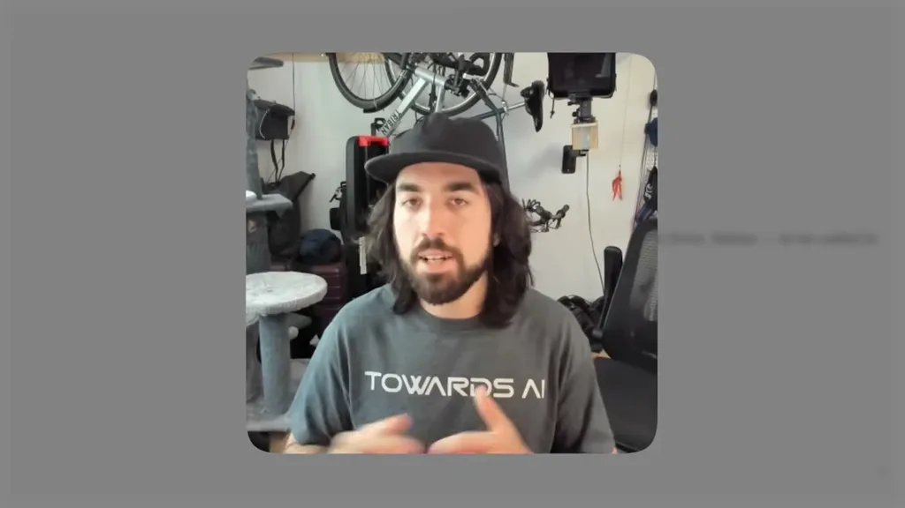
Underlying detail — every claim, typed and timestamped (8)
| Stance | Claim | t |
|---|---|---|
| asserts | Iusztin has over 5,000 notes in Obsidian and another 5,000 in Readwise, growing by about 250 files per month. | 00:00 |
| warns | A vector-database RAG pipeline needs infrastructure that isn't human-friendly to inspect or edit by hand, making it wrong for a personal daily-use research system. | 06:15 |
| asserts | V1's orchestrator-and-subagent deep research over golden links ran three rounds of six queries, produced 40-50 links, and generated 35 course lessons. | 14:35 |
| asserts | V2 aimed the same deep-research loop at the authors' second brains (Obsidian, Readwise, NotebookLM, GitHub) instead of only the public web, removing the need for manually picked golden links. | 17:10 |
| asserts | The demo index.yaml catalog contains 10 sources and 38 wiki pages as derivatives, with metadata like origin, title, authors, and summary per source. | 20:18 |
| recommends | The agent should check the source-level summary first, then wiki derivatives, and only read the full raw source if neither answers the question, for token efficiency. | 23:29 |
| asserts | Every question asked against the wiki leaves a trace and can generate new concept, notes, or comparison files, so the wiki evolves from conversation, not just ingestion. | 24:01 |
| warns | The system currently has no way to know which sources are outdated or weak, and is missing connectors like Google Drive, Notion, and Slack. | 37:32 |
Machine-readable copy embedded in this page (script#ontology) and in the corpus ontology.